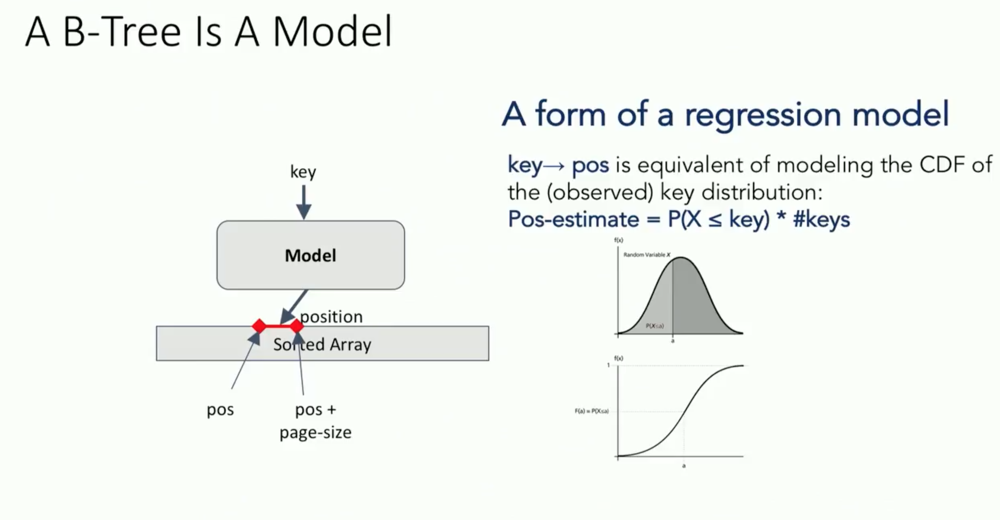

- all existing index structures (B-tree, Hash, BitMap) can be replaced with other types of models, including deep-learning models

| Index Type | Can be seen as |
|---|---|
| B-Tree Index - Range Index Structure : given a key, they predict the location of a value within a key-sorted set |
model to map a key to the position of a record within a sorted array. Best for high cardinality columns. |
| Hash Index | model to map a key to the position of a record within a sorted array |
| BitMap Index | model to indicate if a data record exists or not. Best for columns with lots of duplicate values (low cardinality) DBMS decompresses the bitmap into the RAM data buffers so it can be rapidly scanned for matching values. A modification to a bitmap index requires a great deal more work on behalf of the system than a modification to a b-tree index. In addition, the concurrency for modifications on bitmap indexes is dreadful. |
B-tree Modeling
Hash Map Modeling
Bloom Filter Modeling
The Learning Index Framework (LIF)
- The LIF can be regarded as an index synthesis system; given an index specification, LIF generates different index configurations, optimizes them, and tests them automatically. While LIF can learn simple models on-the-fly (e.g., linear regression models), it relies on Tensorflow for more complex models (e.g., NN).References
- [ Sofware 2.0 - Andrej Karpathy](https://medium.com/@karpathy/software-2-0-a64152b37c35)
- [ Google Paper - The Case for Learned Index Structures](https://arxiv.org/pdf/1712.01208.pdf)
- [ Data Structure Visualizations](https://www.cs.usfca.edu/~galles/visualization/Algorithms.html)
- [Difference between b-tree and bitmap index tips](http://www.dba-oracle.com/t_difference_between_btree_and_bitmap_index.htm)
- [A case for B-tree index structures](http://databasearchitects.blogspot.com/2017/12/the-case-for-b-tree-index-structures.html)